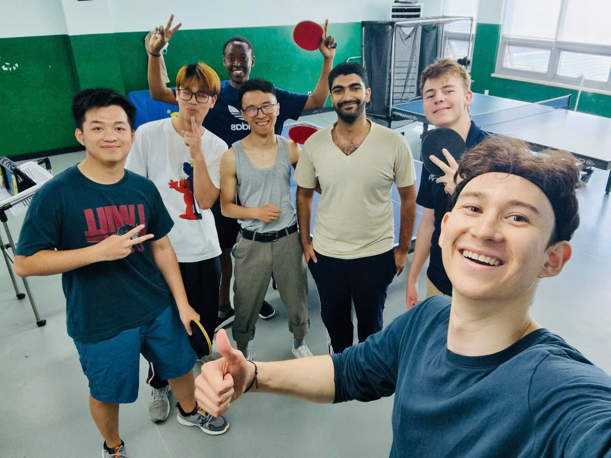
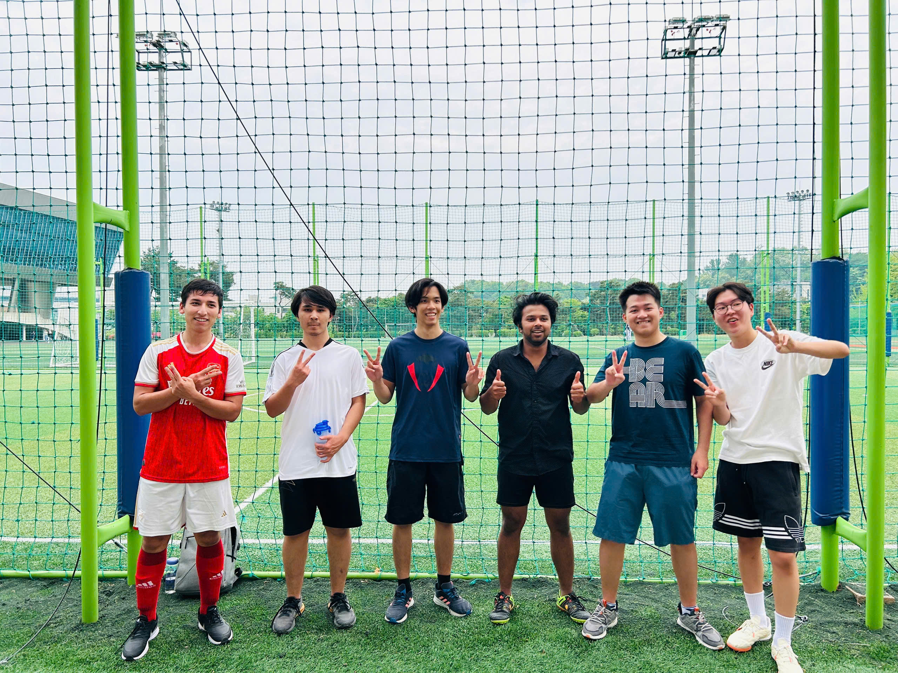

Phan Nguyen (Nguyễn Hòa Phan)
nhphan [at] kaist.ac.kr
Undergraduate Student
School of Computing
Department of Industrial & Systems Engineering
Korea Advanced Institute of Science and Technology (KAIST)
LinkedIn | Facebook
Hobbies
I enjoy competitive programming in my free time. You can also reach me on Codeforces.I watch about one K-drama film per month, mostly romances (Our Beloved Summer is the GOAT for me). My favorite actresses are Park Boyoung, Kim Jiwon and Kim Dami.
I try to run at least 20 minutes every day to build my endurance. Sometimes I play table tennis or football with friends.


My dream is to travel around the world. Below are the countries I have visited so far, and I hope this list will continue to grow.
- Vietnam: My hometown—I have been to around 30 provinces and cities, too many to list.
- South Korea: Daejeon, Seoul, Busan
- Singapore: ICPC 2025, Travel 2024
- Taiwan: Taipei (TMU Internship), Taichung (ICPC 2024)
-
China
 :
Shanghai (SJTU Internship), Wuhan
:
Shanghai (SJTU Internship), Wuhan
- Malaysia: Kuala Lumpur (AJAFA 2022)
Sharing
Some materials that I have. Feel free to use it.Courses at KAIST
- IE203 Something